Introducción a la Ciencia de Datos
Sesión 3 Análisis exploratorio y Visualización de datos
Ismael Gómez Schmidt @ismaelgomezs
Data Scientist
Contenido de Sesión 3

Análisis exploratorio
Estadística descriptiva
Fundamentos y tipos de visualización de datos
Veremos
todo de manera paralela aplicándolo en R Studio (más funciones/librerías)
Análisis exploratorio
Mediante el apoyo de visualizaciones tratar de identificar: errores, outliers, patrones, potenciales variables útiles y/o prescindibles, clusters; o bien confirmar, descartar o redefinir: expectativas, juicios previos o hipótesis básicas.
En definitiva se utiliza para
compararmúltiples variables ycomprender mejorlas propiedades de los datos que tengo. Así, es posible detectar nuevas cosas de los datos que antes de visualizar no se sabían o sospechaban.Las visualizaciones en esta etapa pueden ser "rápidas" (poco prolijas en ejes, leyendas y otros detalles).
Muchas veces es útil apoyarse también de estadística descriptiva, matrices de correlación, entre otros.
Estadística descriptiva básica en R Studio
Estadística descriptiva
- Como su nombre lo dice, se busca
describirlos valores contenidos en los datos. Para variables numéricas se usan distintas métricas de tendencia central, dispersión y distribución.
Para variables categóricas se usan tablas de frecuencia (función
table).
# Además de summary, table, min y max, tenemos:
movies <- read.table('movies.txt', header=T)
mean(movies$rating) # Promedio o media aritmética
median(movies$rating) # Mediana
range(movies$rating) # Rango (mínimo y máximo)
sd(movies$rating) # Desviación estándar
quantile(movies$length, na.rm=T) # Valores asociados a cuantiles
# (cuartiles, quintiles, deciles, percentiles).
# Con el párametro "probs" se define cantidad de intervalos.
Cálculos agregados con función aggregate
mean_rating_year <- aggregate(rating ~ year, movies, mean)
median_rating_year <- aggregate(rating ~ year, movies, median)
#dif <- mean(mean_rating_year$rating - median_rating_year$rating)
Ejemplo 17: Calcular el promedio de rating para los géneros Acción, Romance, Drama y Comedia.
Ejemplo 18: Calcular la mediana de la duración por año para los mismos géneros anteriores.
Preprocesos más avanzandos
Normalización (lineal, raiz cuadrada, logarítmica)
Fundamentos de visualización de datos
Introducción
En general, la razón de ser o el objetivo de la visualización es mejorar el entendimiento de algo.
Por eso se debe transmitir de forma correcta la información. Hay que ser cuidadoso porque
una visualización puede distorsionar la verdad, o generar más confusión en quienes la observan.Se deben tener en cuenta aspectos de la percepción humana (color, distinción de formas, etc.)
Visualizaciones históricas

Visualizaciones históricas
- Mapa origial de John Snow mostrando los casos de cólera en la epidemia de Londres de 1854. La bomba de agua contaminada estaba ubicada en la esquina de Broad Street y Cambridge Street.
Visualizaciones históricas

- Considerado como una de los mejores gráficas de la historia, realizado por Charles Joseph Minard muestra la campaña de Napoleón hacia Rusia en 1812.
Tipos de visualizaciones
Pueden clasificarse según qué es lo que hacen o muestran. Por ejemplo: Comparaciones, Relaciones, Jerarquías, Ubicaciones, Distribuciones, Movimiento o Flujo, Patrones, Datos en el tiempo, Análisis de texto, etc.
Es importante preguntarse entonces
¿Qué es lo que quiero mostrar con mi visualización?
Tipos de visualizaciones
Comparaciones
Tipos de visualizaciones
Relaciones
Tipos de visualizaciones
Jerarquías
Ubicaciones
Tipos de visualizaciones
Distribuciones
Tipos de visualizaciones (Patrones)
Tipos de visualizaciones
Datos en el tiempo
Tipos de visualizaciones
Movimiento o flujo
Análisis de texto
El proceso de visualización
1) El tipo de dato y qué se desea expresar
2) Preprocesar los datos (si se requiere más)
3) Definir un mapeo de los datos: cómo se representará cada variable (ejes, color, tamaño, forma, etc.)
4) Proveer controles interactivos (si se requiere)
Consideraciones de percepción humana
Color
La paleta de colores dependerá del tipo de dato: categóricos rankeados o no, binarios, numéricos discretos o continuos.
¿Se pueden ordenar los datos de menor a mayor?
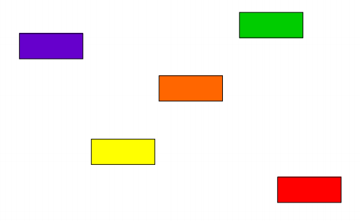
Color
Color
¿Cuántos colores distintos puede apreciar?
- Tiene 22 colores!
Color
Se pueden distinguir adecuadamente entre 8 a 14 colores, dependiendo del tamaño de los objetos, el color de fondo, la saturación, etc.
Tamaño y formas
La recomendación general más encontrada en el mundo de la visualización de datos es la de no utilizar gráficos 3D para barras, tortas o cualquier otro tipo de gráfico 2D que no tenga necesidad de agregarle una dimensión.
Adicionalmente, se sugiere no utilizar gráficos de tortas (tampoco 2D) para efectos comparativos de valores absolutos que no sean superficies
En ambos casos se altera la correcta percepción de los valores ya que las áreas más grandes son percibidas más grandes de los que son en comparación de las más pequeñas, y viceversa.
Recursos
- Libro "Interactive data visualization"
- R Graphics Cookbook
- Sitio web Color Brewer
- R graph gallery
- Libro "The hitchiker's guide to ggplot2 in R"
- R Color Cheat Sheet
Visualización de datos en R
Sistema base: pairs
# Función para armar múltiples scatterplots para variables numéricas
pairs(movies[, 2:6])
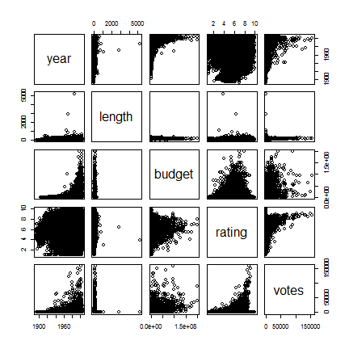
Sistema base: histogram
# Función para histogramas de variables numéricas
hist(movies$rating, breaks=seq(0, 10, 0.2))
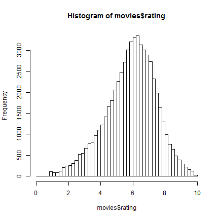
Sistema base: barplot
# Función para barras de variables numéricas
barplot(height=median_rating_year$rating, names.arg=median_rating_year$year)
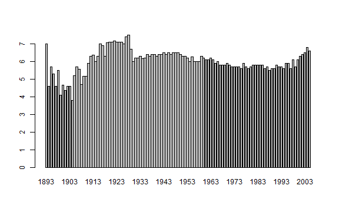
- Ejemplo 19: Calcular cantidad de clasificaciones por cada equipo en dataset de Conmebol y graficar barras en orden de mayor a menor.
Sistema base: boxplot
# Función para boxplot de variables numéricas
conmebol <- read.csv('clasif_conmebol_9814.csv', stringsAsFactors=F)
conmebol$Dif. <- conmebol$GF - conmebol$GC
boxplot(as.numeric(Dif.) ~ Equipo, data=conmebol)
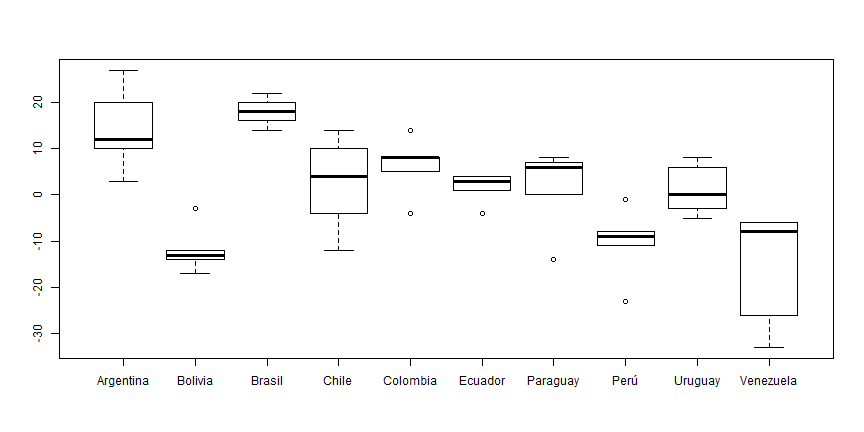
- Ejemplo 20: Hacer boxplot para la duración de cada Género de películas
Sistema base: scatterplot
# Función para scatterplot de variables numéricas
plot(x=conmebol$GF, y=conmebol$Pts, pch=19, col='red', main='Goles a favor vs Puntos',
xlab='Goles a favor', ylab='Puntos')
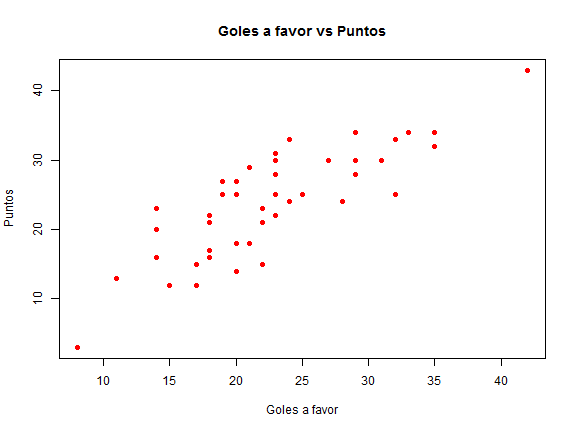
ggplot2

Librería creada por Hadley Wickham. Permite construir la mayoría de los tipos de gráficos, de manera eficiente, con consideraciones estéticas y
mucha flexibilidad.Es muy usada dentro de la comunidad y por lo tanto está en constante desarrollo y tiene un montón de extensiones.
Para usarla adecuadamente lo ideal es que tus datos sean parte de un dataframe y cumplan con el concepto Tidy data.
Utiliza una sintaxis "aditiva" en la cual se van sumando elementos asociados a distintas partes del gráfico.
ggplot2: Barras
library(ggplot2)
ggplot(median_rating_year, aes(x=year, y=rating)) +
geom_bar(stat='identity', fill='darkblue')
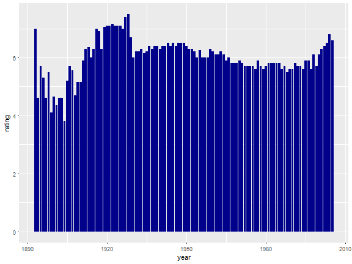
ggplot2: Barras
ggplot(movies, aes(x=year)) + geom_bar(stat='count', fill='red') +
theme_bw() + xlab("Year") + ylab("Amount of movies") +
ggtitle("Amount of movies per year")
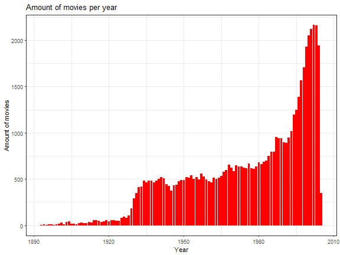
ggplot2: Boxplot
ggplot(conmebol, aes(x=Equipo, y=Pts)) + geom_boxplot() +
labs(y='Puntos') + theme_bw() +
theme(axis.text.x = element_text(angle = 90, hjust = 1)) +
ggtitle('Boxplot de puntos obtenidos por equipo')
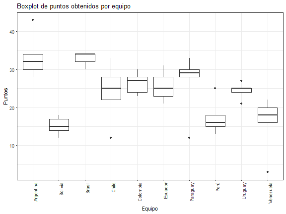
ggplot2: Scatterplot
ggplot(conmebol, aes(x=GF, y=Pts)) +
geom_point(aes(col=as.factor(Equipo), size=as.numeric(Dif.))) +
labs(x='Goles a favor', y='Puntos obtenidos', color='Equipo', size='Dif. goles') +
theme_bw() + scale_colour_brewer(palette = 'Paired')
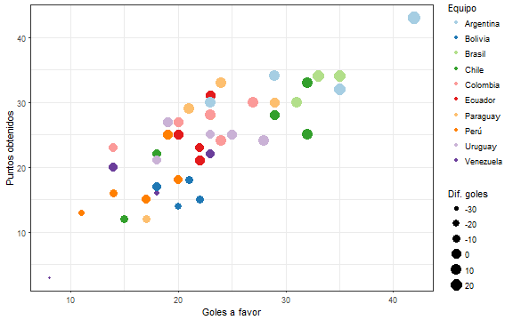
más elementos en ggplot2
geom_textpara agregar anotaciones dentro del gráfico.ggrepelpara que "no se pisen"coord_flippara girar en 90° las barrasscale_y_continuous(breaks=...)oscale_x_discrete(limit=..., labels=...)para editar ejestheme(legend.position="none")para ocultar leyendafacetspara separar en facetas
otros geoms y detalles en ggplot2
geom_alluviumpara diagramas de flujogeom_tilepara heatmaps de matriceslibrerías complementarias
gridExtraocowplotpara ordenar múltiples gráficos en unolibrería complementaria
ggjoypara densidades de distribución múltiples
Otras librerías
Ejemplos

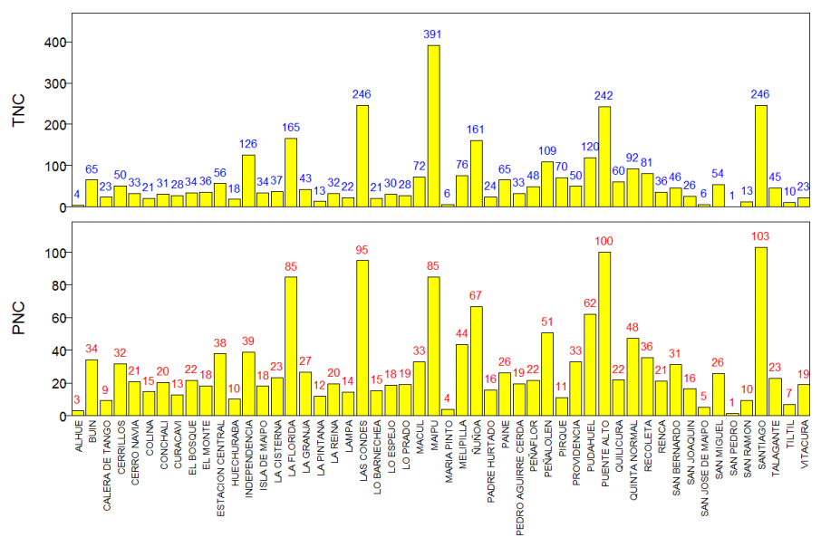
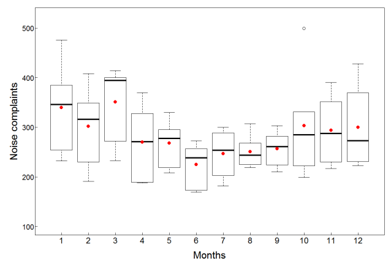 

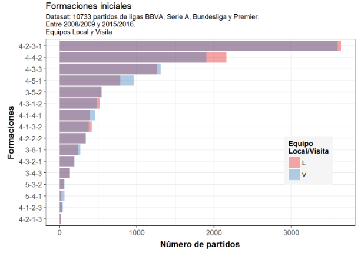 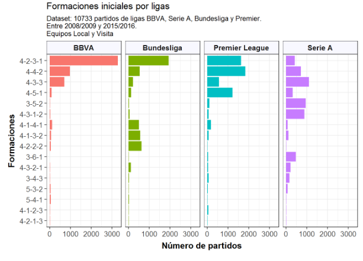
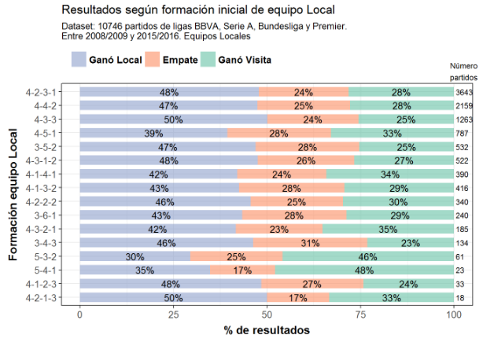 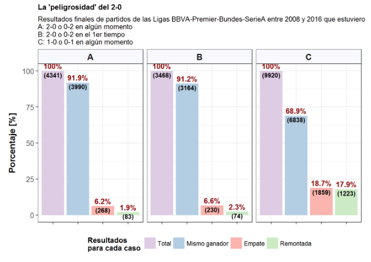
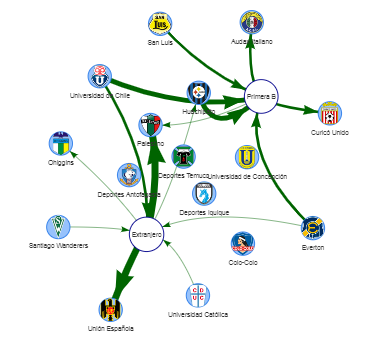 
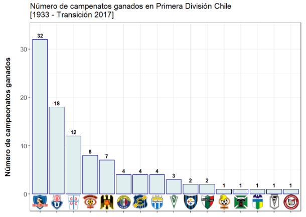 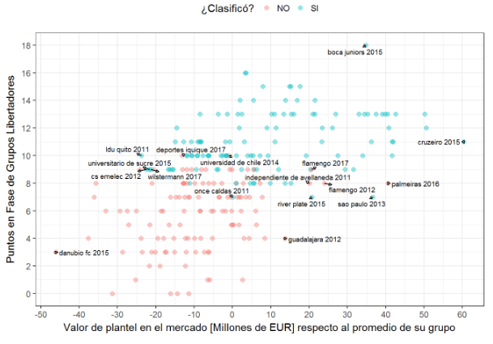
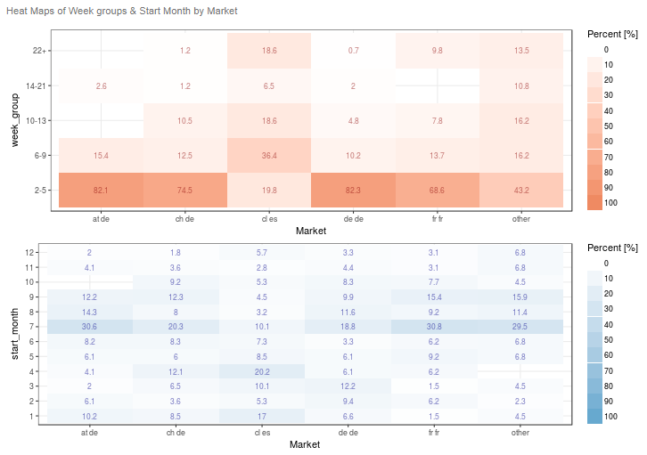